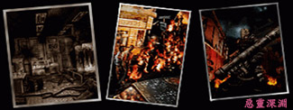

|
惡靈古堡∼生存者-----File資料
|
| 教會房間桌上 | |
| 餐廳店主日記 | 餐廳廚房桌上 |
| 患者病歷 | 醫院辦公室桌上 |
| Umbrella秘密檔案 | 圖書館二樓書庫 |
| 管理員Andy日記 | 南地下水道儲物室 |
| 典獄長日記 | 監獄典獄長辦公室桌上 |
| 年輕人日記 | 監獄牢房床上 |
| Vincent日記 | Umbrella大樓Vincent辦公室桌上 |
| Vincent竊聽日記 | Umbrella大樓監控器操作台上 |
| Lott日記 | Lott的家Lott房間桌上 |
| 工廠職員日記 | 工廠地下二樓辦公室桌上 |
| 原料抽出方法 | 工廠地下三樓實驗室桌上 |
| Raccoon City破壞後報告 | 戲院放映室桌上 |
| 教會經理日記
10月7日 今天，司令官召集我和這個城鎮的所有負責人，聽取有關Raccoon City前幾日受到破壞的簡報。會議中 對William Birkin企圖奪取G病毒的背叛行為，表示出強力譴責，司令官並對我們說，如果發現像 Birkin這類的背叛者，可把這人殺掉。 對於司令官的命令，我也有同感，因為這兒好像Raccoon City研究所一樣，同事屬於重要的設施，故此 絕對不容許爆發生化為機。如果真的出現了危機，那麼數十億的資產便沒有了。從此以後，我必須留 意每位社員的動向。
10月4日 今天聽到一件駭人聽聞的事件。 上週Raccoon City突然受到破壞，除了一名小孩生存外，當地市民全都變成了僵屍，而這個事件聽聞是 和Umbrella藥廠有關的，但是不大了解詳細內容。 有一傳聞說這宗與Umbrella有關的意外只是小事而已........無論如何我們現在居住的市鎮沒有任何事情 發生........ 10月6日 今天聽到Raccoon City的被破壞，是由於一位名William的人所做的。他想獨吞不知是名為T或是G的病毒 ，因此令Umbrella本社派人前還搶奪，但那時他已向自己注射了病毒，因此變成了怪物，後來因為地 下水滲透的緣故，而水溝內的老鼠把病毒散播到整個城鎮。 10月8日 結果是相同票數？一群前來用膳的Umbrella社員討論T病毒是否會擴散到這個城鎮。那傢伙笑說雖然這 裡不會發生問題，但是亦不排除完全沒有這種威脅。由於Umbrella給了我豐厚的酬金，故此我來到這 個偏僻的地方，為Umbrella社員提供膳食服務，我開始喜歡這個城鎮，我相信應該可以安全逃離這裡 的。
名稱：史密夫•J•威廉士 性別：男 年齡：17歲 身高：181公分 體重：72公斤 健康狀態：良好 精神狀態：無氣力 藥物份量：（早餐）混合了精神安定劑Tranquilizer 10mg粉末的湯﹔（晚餐）混合了安眠藥 Hallucian 5mg的麵包
名稱：珍妮佛•金寶 性別：女 年齡：18歲 身高：165公分 體重：47公斤 健康狀態：良好 精神狀態：不安定 藥物份量：經過長期隔離生活所產生的對人強烈猜疑心，導致將精神安定劑混入食物的方法無效（每 餐均剩下不少食物）。將精神安定劑溶解在水裡，再讓她飲下相信是最佳的方法。
名稱：龍二•Koyuta 性別：男 年齡：18歲 身高：177公分 體重：59公斤 健康狀態：經MRI檢查結果，證實小腦有靜脈癌，沒有商品價值（無效INVALID）
名稱：嘉莉蓮娜•艾班查哥夫 性別：女 年齡：17歲 身高：155公分 體重：43公斤 健康狀態：良好 精神狀態：良好 藥物份量：（早餐）混合了精神安定劑Tranquilizer 10mg粉末的湯
本檔案是記載了在1998年5月11日於美國Arkley研究所洩漏的「T病毒」，以及大約四個月後在Raccoon City所爆發的生化危機而出現之新生命體「B.O.W」。除了這些記載外，目前肯定上有其他B.O.W存在 的，有關這些資料會在下一個檔案中記載。 B.O.W File1 「僵屍」受到了T病毒感染的人類，失去了人類的理性本能，只是為了食慾而行動，經 常為了捕食人類而四處狩獵。應付方法是，由於他們行動緩慢，故此只要遠離他然後不斷射擊便可。 B.O.W File2 「僵屍犬」受到T病毒感染的犬隻，由於肉體腐化並不嚴重，所以仍可以敏捷動作來攻 擊，他們對聲音特別敏感，只要聽到走路聲會前來襲擊。應付方法是，可用手槍來擊斃他們，但由於 他們擁有敏捷速度，因此瞄準時較為困難。 B.O.W File3 「利卡」利卡是受到T病毒進一部侵蝕的僵屍化人類，變異後以四足步行，而且身體部 分外露，特徵相當顯著。其跳躍能力比僵屍高，一下子便可飛躍向上。雖獵人沒有視覺器官，但擁有 異常發達的聽覺。對付方法是，由於他聽覺發達，故此使用槍械時要格外留神。此外他對腳步聲極敏 感，故此要留意步行聲音。 B.O.W File4 「食人植物」以植物作為本體的B.O.W。他主要從身體表面攝取水蒸氣維生，他可自行 步行，還有鞭子般的觸手以做攻擊。對付方法是，以榴彈發射火炎彈攻擊怕火的他們。 B.O.W File5 「獵人」先將DNA與T病毒混合，然後放入人體加以培育而成的B.O.W。獵人特點是下 半身的肌肉發達，可以高空跳躍攻擊。對付方法是，當他一瞬間跳到獵物面前，會有瞬間停下來的時 間，那便可再這時進行攻擊。 B.O.W File6 「Tyrant」我們公司全力開發的T病毒究極型態B.O.W。此外，尚有以Tyrant作為基礎的改 良品種，包括有更凶殘性格的「Tyrant」，以及擁有智慧的「追跡者」。這些研究均是由歐洲支部方 面開發。對付方法是，由於「Tyrant」擁有強大防禦和攻擊力，因此現在沒有任何方法可以應付。 B.O.W File7 「？？？？？」至今尚未完成的研究，在培育Tyrant的遺傳因子時，如果把某種物質放 進裡面去的話，便極可能大量生產更凶殘的B.O.W。但是問題在於........。
9月6日 由幾個月前開始便剛來就任司令官的Vincent，我一直也未曾和那傢伙會面。表面上他是由Umbrella總 公司來的精英分子，另一方面則是個連殺掉同伴也面不改色的人。 呀，我長年累月都是躲在這個地下室內，這些話和我也沒有大關係........ 9月20日 聽到那個令人討厭的傳聞。前來就任的Vincent司令官那傢伙，向工廠內的人下達各種命令，每日都對 由世界各地捉來的年輕人進行殘酷的行為。到底他們為何會被捉來，對於沒理由知道實情的我還說， 實在是不能夠打聽到的........何況，實際上這又與我沒有什麼關係........ 10月10日 昨天晚上，似乎是發生大事情了。詳細情形我不清楚，但好像是和Vincent的殘酷手段有關。 11月9日 終於等到Vincent司令官到來視察了。雖然只是說著些無聊的話，但也能看出他是一位殘忍的傢伙。原 本我打算和他拍一張紀念照片而已，不過他居然動怒起來，果然是傳聞那般的討厭傢伙。
10月20日 今天，終於收到Umbrella總公司對前幾日的報告書，以及有關提出20個原料集體自殺事件的答覆。總 公司方面對這次的事件並沒有起任何疑心，並且答應會繼續向我們提供來自寄各地的原料。其實我是 受到Vincent司令官的命令，要將集體逃獄事件故意報告為集體自殺事件，至今感到有點後悔。 10月20日 可是，在這裡如果要和Vincent司令官為敵，那就變成跟死人沒有分別。我對於那一晚，那群企圖越獄 的年輕人如蟲蟻般慘被射殺時，Vincent那個殘酷的笑容無論怎樣也忘不了。司令官傳聞中是無血無淚 冷酷無比的男人。他真的是殺人狂，本來我的職責是要將所有真相向總公司回報的，但是我很害怕， 很害怕Vincent司令官。我和他可算是一夥人了........
9月5日 在剛果街頭被一群黑人男子拉到這兒來，算算日子已經過了16天。剛到來時什麼也不懂，但當看過這 裡的機關後就知道我們其實是Umbrella製藥公司人體實驗的土撥鼠，被囚禁在此地純為實驗需要。這 兒所有人都是Umbrella的員工，而女性則是他們的親人。土撥鼠可算是來自世界各地，我隔鄰房間的 那人來自中國，對面的是巴西，其他如俄羅斯和日本等等彷彿萬國博覽會一樣，而很巧的是我們一年 紀相若，由最小16歲以至最大的19、20歲。Umbrella的人帶我們到遊戲機中心或俱樂部時經常有被監 視的感覺，雖然口裡說著我們要放鬆精神但是絕對騙不了我們的。無論如何現在也要集齊同伴要從這 裡偷跑。 9月10日 最近，同伴之間的言行有點有趣，總覺得食物有被混入了藥物似的，每當我的意識模糊起來時，就越 有這種感覺。 9月21日 救救我們！今天我們成員中的其中一人，在我隔壁的陳氏，被強行帶到山上的工廠去。恐怕小陳真的 一去不返了，其實上星期的Anna和積高夫也遭遇到同一命運。我是知道的，知道被帶上山頂工廠是我 們每人的宿命。這城鎮的Vincent以司令官來命令工廠的人，方法是將我們的腦袋切開，然後在裡面不 知抽取什麼物質來。昨天我們被帶到俱樂部時，工廠的人告訴我們一些事情，原來Vincent是惡魔。不 單如此，就連城內的女孩子也不將我們當作人類看待，只是像土撥鼠般視而不見。在這裡我們只是惡 魔！ 反正遲早都會被殺，所以越獄計劃必須盡早實行！ 10月9日 難得的機會來了，這個星期Umbrella那班人突然手忙腳亂，原因是聽聞美國那邊的研究所發生了重大 事故，守衛均忙於蒐集情報而忽略了監視我們。目前我們的集體逃獄行動成員工作已安排好，史岱比 茲和安歷基負責偷守衛的鎖匙，我和山崗負責調虎離山，至於吉川和費利比則負責安排武器。 10月10日 逃走路線已經決定好，將於今晚11時開始行動。總數20人的A班和B班會分頭行動，A班會由地下監禁 室的通風口往下水道去，至於B班則會從瞭望塔以繩索綁得僅僅的。但如果失敗了毫無疑問會被 Vincent殺死，可是反正以後他也會命令要將我們的頭蓋骨切開，所以走投無路的我們來說必須要有所 行動。
10月11日 昨晚，被囚禁的原料發起集體逃獄，他們搶奪了槍械來製造暴動。我將牽涉該事件的原料全都射殺， 不過若被Umbrella知道這件是那就不得了，這會令我本來想將得到的功績作為送給總公司見面禮的計 劃弄砸。結果我命令典獄長，要將這件事以集體自殺的方式來處理，至於其他人亦被我阻止提及有關 這件事........ 11月8日 平時對我的做法感到不滿的人，正為了向總公司高層控訴我而在開始不斷蒐集證據。昨天Lott這小子 告訴我關於有間諜潛入了這個城鎮的事情，那傢伙或許與城裡的人扯上關係。暫時還是任由他行動吧 ，我應先調查他的背景關係和前來的目的。而那位叫Lott的小子是我在這裡唯一能夠信賴的人，真是 件可悲的事。 11月9日 城裡的人們準備在總公司將新一批原料帶過來的同時，把對我的告發狀交給他們，說已經找到什麼證 據確鑿。絕對不能讓這件事情發生。無論如何也不能放過城裡那夥人，我定要他們知道背叛的下場是 怎樣........ 11月22日 我要讓他們知道我的憤怒。病毒正在城內四處散播，當然這次也會偽裝成意外，總之現在這個城鎮已 陷入被破壞的狀態，而我就先光榮地帶著工廠的研究成果返回Umbrella總公司去。現在再也沒有背叛 我的蠢材了........不，還剩下一個人未解決，就是那個傢伙，那隻偷偷潛入這裡的老鼠。
Vincent司令官的暴行，到了現在終於也無法再沉默下去。為了令他失敗，需要蒐集各種決定性的證據 ，以向總公司高層部報告。但是，他卻很少有尾巴讓人抓到，這樣唯有靠我們以較不危險的辦法，那 就是把它使用電話時的竊聽錄下來。這樣才把令他敗陣的重要證據弄到手。 至於這個竊聽紀錄，就是在上個月的集體逃獄事件裡，他將全部年輕人射殺後並且把事實隱瞞起來的 錄音證據，此外還有他到這裡就任之前為了突出自己，甚至連同僚也能殺掉的事實也都被錄了音。這 個竊聽紀錄將會在下周總公司的人到訪時交出來，他將毫無疑問的失敗了，而那時起和平的日子將才 會再次降臨這裡。
9月10日 今天，我在遊戲機中心看見被囚禁在監獄的人們，那些傢伙以呆滯的目光望過來，流著唾液的女性， 與另一些已犯罪目光瞪過來的人，他們穿著的衣服不但殘舊，身體還傳來令人討厭的味道。 聽過爸爸與Vincent司令官的說話，知道他們與我們這群Umbrella員工是截然不同的人種來的。爸爸他 們說過為了另這些人便回正常，因此將他們帶到島上接受手術，以求盡早治療病情。 10月15日 Vincent司令官把集體逃獄的人們，全部都殺死了。為何他要特地這樣做？確實，這夥人是比不上我們 ，但也無需要全部殺死吧。為什麼？我相信的人為何會這樣做？Umbrella及爸爸等人，不是要利用手 術來將這些愚蠢的人們變回正常嗎？為什麼要殺死他們？ 11月23日 鎮內發生恐慌事件！四面八方均出現了怪物，人人都很害怕！ 直到昨天還對我很友善的Umbrella叔叔竟然向我襲擊，到底還有誰能夠幫助我？ 11月24日 蓮爸爸媽媽也變成怪物了。 Vincent司令官說除了僅存的人外，鎮內所有人都已變成怪物，再也沒有能夠依靠的大人。 如果只是剩下我一個人的話，我又怎樣能救助我的妹妹Lily呢？ 我們一定要從這裡逃出去！
1998年8月5日 還有很多呀。每天，都要將沒有犯罪的年輕人綁在手術台上，在沒有做麻醉下將其頭蓋骨切開，不斷 重複切除腦袋一部分的工作........鑽進頭顱後他們的泣叫聲、悲鳴、臨終前的叩聲到現在仍餘留在我的 耳朵深處，絲毫沒有消失。但是，Vincent司令官卻說著「別把他們當作人類看待，他們畢竟只是製造 Tyrant的原料而已」這類冷血的話語。 可是實際上，用手術刀切開他們的頭蓋骨，我們始終覺得這樣做總是不太好，他們確實與我們一樣都 是人類。我們已懇求過Vincent司令官數次，起碼都要替他們麻醉才進行手術吧，但他卻已不這樣做就 無法抽取高純度的ß Hetero Non-serotonin否決了。 在眾多部門命令下，我們的工作是不容許有倫理存在的，毫無疑問我們死後必定會下地獄。不........或 許事實上只有哪個傢伙才會下地獄。
為了確立Tyrant的大量生產體制，培養遺傳因子時大量高純度ß Hetero Non-serotonin的挹注是不可欠缺 的。經過調查後，發現這種物質是人體腦部物質的其中一部分，而在第二次性徵後期之年輕人（16歲 至19歲的健康體格），其腦下垂體是會泌出最多這種物質的。 此外，根據醫學數據得知這種物質是會對ß Hetero Nor-serotonin，一種由腦幹青斑核所製成的物質，所 帶來的過剩分泌會產生反應。 ß Hetero Nor-serotonin，是人類在極度緊張狀態或恐怖狀態時所分泌出來的物質。 由於ß Hetero Nor-serotonin是只會在活性化細胞中存在的物質，故此在腦死亡狀態的人體是無法取出它 的。 所以，在沒有進行麻醉的情況下，這些成為原料的年輕人當被活生生割開頭蓋骨時，因為恐懼被殺與 劇痛的感覺會使ß Hetero Nor-serotonin分泌起來，從而再切除腦下垂體是最佳的抽取方法。 斯拿島Tyrant工廠司令官 Vincent Goldman
 1998年8月5日 從U.B.C.S.調查隊隊員的報告書１ 5月11日在生物兵器研究所，與在Spencer海洋館所爆發的生化危機，隨著7月25日S.T.A.R.S.開發隊伍 的 Jill和Chris等人炸燬了設備而終結，但今天8月5日亦已知道T病毒洩漏了出來。記得還有些需要注意的 人。 有一條未經確認的消息，我們公司的前社員，屬於S.T.A.R.S.開發隊伍的隊長Wesker斷定已經死亡。 至於Jill和Chris現正搜索有關的情報，並打算向媒體及警察方面公開這件事件，期望本公司會以政治手 段來處理這件事。 U.B.C.S.隊員列哥拉•茲諾域夫 1998年9月30日 從U.B.C.S.調查隊隊員的報告書２ 我現身處於Raccoon City某個鐘樓內。城鎮已被僵屍所佔領，可以說生化危機事件已經完全破壞整個 Raccoon City。但是這次事件與海洋館的意外有點不同，我們公司的研究員，身為T病毒與G病毒的發 明者William博士，他的謀反令整件事件被視做人為事故。 有關這生化危機的調查結果，我感到有兩點是值得留意的，第一是需要強化我們公司散佈全球之設施 與病毒的管理體制，第二是要對社員進行再教育。生物兵器病毒乃是我們公司將來的主軸，同時亦為 貴重的商品。從此以後，絕對不容許再次出現生化危機了，這是全體社員要謹記及希望的。 U.B.C.S.隊員列哥拉•茲諾域夫 1998年10月6日 在Raccoon City所爆發的生化危機，很難收集到T病毒感染資料與B.O.W對戰資料。特別是由Tyrant改造 而來被稱為「追跡者」的新種B.O.W，要收集他的實戰資料更加困難，原因是他除了擁有極度的凶殘 性外，還擁有高度智慧，面對這個強大對手，不少U.B.C.S.隊員因此而犧牲。 懇請各位研究者能詳細分析今次的實戰資料，藉以開發出究極B.O.W。 Umbrella B.O.W 開發組 |
惡靈深淵Biohazard Abyss http://98.to/coolbio